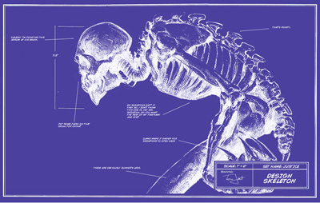
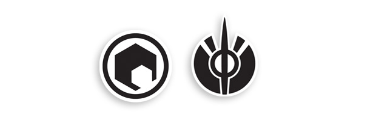
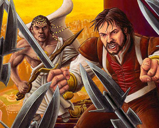
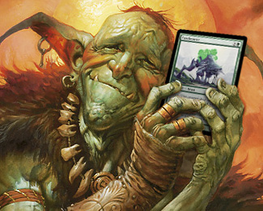
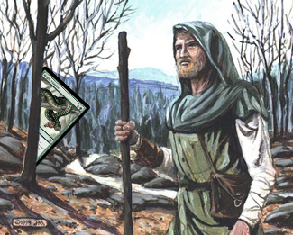
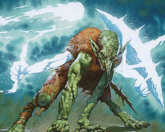

作者：Mark Rosewater
译者：Pa_Cha
译文地址：https://tieba.baidu.com/p/4064392277
MTGCN公众号中没有找到此篇，但我有在MTGCN的和讯博客里看到此篇的印象，应为MTGCN所译。感谢贴吧用户“萨塔拉-维亚”对此篇的存档，感谢度娘没吞掉此篇中的某些段落（就像接下来的几篇那样）。
我每年都会写一篇名为“螺母和螺栓”的文章。这一系列的文章将为大家介绍万智牌不为人知的设计艺术和设计策略。我在这些文章中花大篇幅讲述了设计者在设计一个卡牌系列时所应具有的直感及创意洞察力。不仅如此，在设计工作中还有许多枝节问题需要注意。总之，螺母和螺栓专栏会涵盖所有这些内容。
我在2010年撰写的螺母和螺栓专栏文章介绍了卡牌代码。我又在接下来一篇文章中解释了如何利用这些卡牌代码来创建设计骨架。那么今天我就根据上篇文章最后创建好的设计骨架来进行填充（这是一个位于三系列环境中间位置的小系列,我们已经完成所有普通牌的设计）：
CW01 – 生物, 小号
CW02 – 生物, 小号, 飞行, 搅坟
CW03 – 生物, 小号, 先攻
CW04 – 生物, 小号, 闪现, 进场获得生命
CW05 – 生物, 中号, 警戒
CW06 – 生物, 中号, 飞行
CW07 – 法术 – 制造衍生物, 飞行
CW08 – 瞬间, 力量膨胀
CW09 – 瞬间, 结界去除
CW10 – 结界, 生物去除
CU01 – 生物, 小号, 飞行,
CU02 – 生物, 小号, 帷幕
CU03 – 生物, 中号, 飞行
CU04 – 生物, 大号
CU05 – 瞬间, 硬康, 搅坟
CU06 – 瞬间, 软康
CU07 – 瞬间, 回手
CU08 – 法术, 抓牌
CU09 – 法术
CU10 – 结界, 灵气, 生物去除
CB01 – 生物, 小号
CB02 – 生物, 小号, 飞行
CB03 – 生物, 小号, 死触, 搅坟
CB04 – 生物, 中号, 威吓
CB05 – 生物, 中号, 进场起死回生
CB06 – 生物, 中号
CB07 – 瞬间, 生物去除, 搅坟
CB08 – 法术, 弃牌
CB09 – 法术, 吸生物血
CB10 – 结界, 灵气, 正面异能, 搅坟
CR01 – 生物, 小号 – 进场直接对牌手造成伤害
CR02 – 生物, 小号, 先攻
CR03 – 生物, 小号
CR04 – 生物, 中号, 敏捷
CR05 – 生物, 中号, 践踏
CR06 – 瞬间 – 直接对生物造成伤害
CR07 – 瞬间 – 直接对两者造成伤害
CR08 – 瞬间 – 力量膨胀
CR09 – 法术 – 惊慌, 搅坟
CR10 – 结界, 灵气, 正面异能
CG01 – 生物, 小号, 搅坟, 进场神器/结界去除
CG02 – 生物, 小号, 重生
CG03 – 生物, 小号, 死触
CG04 – 生物, 中号, 延势, 搅坟
CG05 – 生物, 中号
CG06 – 生物, 中号
CG07 – 生物, 大号, 践踏
CG08 – 瞬间, 力量/防御力膨胀
CG09 – 法术, 获得生命
CG10 – 结界, 灵气, 正面异能
CA01 – 生物, 中号
CA02 – 牺牲效果, 法术力相关
CA03 – 横置异能, 法术力相关
CA04 – 武具, 力量/防御力膨胀
CA05 – 武具, 躲避式异能
CL01 – 产W
CL02 – 产U
CL03 – 产B
CL04 – 产R
CL05 – 产G
当一个系列的卡牌填充工作进行到此的时候，就可以开始对局测试了。如果您尚未阅读螺母和螺栓专栏的前两篇文章（尤其是上一篇关于设计骨架的文章）的话，我强烈建议您先去读一下。本文是基于您了解前两篇文章内容的前提下编写的。
在开始介绍如何填充设计骨架之前，我想再花时间强调一下设计骨架的作用。
设计骨架像是一份草图，而不是一张填色图片
由于设计骨架会显示出每张牌的位置需要什么样的单卡，因此它很容易让人产生把卡牌对号入座的冲动。可实际上设计骨架并不是这样用的。对于设计师来说，设计骨架是一个用来监视卡牌系列整体感的工具。我之所以将其比作一份草图，就是因为设计骨架的作用就像草图对于画师们的作用一样。

举例来说，对于每张万智牌，我们都会要求画师提交一份草图。为什么呢？因为我们想了解画师对自己将画出这张牌的大体想法是怎样的。草图有助于画师在了解整幅图的同时，激发许多相关信息以便使他在正式作画前进行思考。所以说草图并不是最终画作的简略微缩版本。画师们是不会把草图照搬到正式画作上去的。
草图可以帮助画师在作画时的一些细节方面做出重大决定。它可以帮助画师决定从哪里开始画起。在正式作画过程中，画师常常会意识到一些此前从未想到过的问题。也许草图中的某些信息可以启发画师创造出一些他未曾预料到的东西。总之，画师在正式作画时的思维必须要处于一种完全自由开放的状态。草图之所以很重要，就是因为如果没有一个对画作的整体感觉，画师是没法开始作画的。
设计骨架也很相似。如果你把完成后的卡牌文档和设计骨架进行对比的话，确实能发现前者是从后者演变而来的。但同时你也会发现，完成后的卡牌文档有着许多它自己的独特之处。总之在我们开始填充设计骨架前，我希望大家能够了解上述原则。
既然已经弄清了设计骨架的用法，下面就让我们开始填充它吧。
第一步：从普通牌入手
无论哪个系列，我所设计出的第一张牌都是普通牌。这是为什么呢？因为我们在前期设计中所采用方法被称作“理念验证”。我已经说过好几次了，人们总会高估设想的价值。没错，一个绝好的设想的确很有价值，但这对于一个设计师来说并非最有价值的元素。应该说，对于一个绝好设想的成功执行才是最具价值的。

前期设计的工作重点就是确定如何执行你的相关设想。R&D 一般会给我和我的团队几个月的时间来确定工作内容。但在这期间我必须定时提交理念验证书（如果我是首席设计师的话）。也就是说，我要把自己的那些“疯狂设想”付诸万智牌实卡。而这个转化过程的目标则是那些普通牌。为什么普通牌如此重要呢？因为它们是一个卡牌系列的生命。数量众多的普通牌在一个系列中占据着很大比例。我经常这样说：如果一个系列的主题没有在普通牌中有所体现的话，那它就称不上是这个系列的主题。
我们之所以率先做出普通牌，就是为了验证这些普通牌能否承载系列主题。在把普通牌都设计出来前，我们无法确认设计团队所希望达到效果是否切实可行。我将普通牌作为整个系列设计工作的开始也是为了验证是否可以通过它们以最简单、最灵活地方式来体现系列主题。
第二步：从设计难点入手

您可能已经听说了，第二届设计师大赛马上就要落下帷幕了。（Ethan Fleischer、 Shawn Main和Scott Van Essen将前往威世智总部展开最后的角逐。决赛将在3月7号周一举行，比赛内容包括设计挑战和一系列被称为The Gauntlet的面试环节。欢迎关注我推特上的有关跟进报道。）
如果您一直在关注第二届设计师大赛或者对几年前举行的第一届比赛还有印象的话，就会发现，我为参赛者们设置的挑战项目都是让他们在规定条件极其受限的情况下进行设计。因为设计工作中最重要的一项技能就是去填补那些有很多限制条件的“空洞”。
这一点在设计骨架的填充过程中体现的非常明显。每当一张单卡被设计出来后，都相当于为系列中其他卡牌设定了某些限制。比如说，我设计出了一张可以进场获得生命的白色生物。那么这就意味着我不能再做出一张能够让牌手获得生命的白色普通单卡了（除非这个系列的主题或副主题就是获取生命）。任何一个选择都会对你其他的选择构成影响。基于这个原因，我们就需要从设计骨架中填充难度最大的部分开始做起。
上述这个规则也可以看做是另一个我们从普通牌开始入手的原因。普通牌是具有的限制是最多的。可以不客气地讲，它们是设计起来最有难度的单卡。那么如何确定设计难点是什么呢？这取决于以下几点：
关注点是什么？ 一个出彩的卡牌系列很重要的一点就是要确保设计者希望体现系列特点的部分能够成为玩家们的关注点。而且这个关注点还要担起吸引玩家的作用。做到这一点最有效的方式就是让那些最好用的咒语——设计质量和强度均属上乘的咒语能够体现系列主题。鉴于这一点的重要性，以及要让这些咒语拥有最大的发挥空间，它们就是需要我们去率先入手的设计难点。
新鲜点是什么？ 最难做的事清就是去设计那些从未涉足的内容。新鲜设计元素所具有的限制往往在其首次被设计成形前是无法预知的。鉴于此，一个新鲜的设计元素，尤其是新机制往往都是一个好的入手点。
最具限制性的部分是什么？ 并非每个设计元素的地位都是平等的。比如说多色卡牌就拥有比单色卡牌更多的限制性。它们需要符合两种颜色的特点，而非一种。一张单卡所承载的限制越多，设计起来的难度就越大。
五色卡组中都包含了什么？ 严格来说五色卡组也属于限制性的范畴。但因其在设计中的出现频率很高，所以我把它单列了出来。每有一张牌被设计出来，它都会对所有其他牌造成限制。这一点在设计五色卡组时体现得格外明显。每个卡组中的第一张牌都会规定这个卡组所含单卡的内容设置。而这种设置的所带来的限制会随着卡组内卡牌数量的增加而愈发严格。倘若不提前规划好，将很容易出现在填充五张卡牌位置的过程中卡壳的情况。
我虽然不能确切告诉大家设计工作中的最难点是什么。但我可以确定的一点就是，如果不尽早着手设计对上述几种卡牌的话，将很可能在之后的设计工作中遇到无法解决的难题。创建设计骨架就给了我们提前观察系列中每张卡牌所处的地位，以及规划下一步设计工作的机会。毕竟提前制定好工作路线，将避免走进设计工作的死胡同。
第三步：每当设计出一张你喜欢的单卡，都可以将其加入卡牌文档

这一步看起来非常理所应当。但我就发现很多新手设计师在不断设计新牌，以期能够能找到最适合某个设计空洞的选择。请不要这么做。只要某张牌达到了让你喜欢的程度，就把它加入设计骨架吧。因为有一点大家需要牢记：你是可以对设计骨架中的卡牌进行更换的。如果有一张更适合某个位置的卡牌被设计出来的话，就可以用它更换已有的某张牌。总之，填充设计骨架很大程度上就一个卡牌更新的过程。
一个非常好用小技巧是这样的：如果同时有两张牌都符合同一个卡牌位置，而你又不确定哪一张更好。那么就将这两张卡牌都放进这个位置。而当你团队的其他成员发现两张拥有相同卡牌代码的单卡时就会明白，你是认为这两张牌都符合这个位置的要求。于是他们会帮你决定最终留下哪张牌。或者，你也可以通过对局测试来最终确定留下哪张牌。
如果你卡牌系列是由一个团队和非一个人来完成的话，很重要的一点就是要让团队中的每一个成员都能时刻了解设计工作的进展情况。在威世智，我们使用着一个叫做“多重宇宙”的数据共享平台。我在填充设计骨架的同时，设计团队的其他成员不仅可以看到我新添加了哪些内容，而且还可以有针对性地进行留言。
我一直强调将新卡牌添加进设计骨架赶早不赶晚的原因就是它们能帮助你确定哪些内容是正确的。你的团队会对这些新卡牌进行讨论或对局测试，从而推进设计工作的进行。虽然这些卡牌可能并不是最终版本，甚至可能不会进入这个系列的最终单卡名单，但它们会让这个系列的设计工作获益。总之我们要让这个阶段的卡牌设计文档保持不断更新的状态。每个位置上的卡牌都应该被视为一个可以被更好单卡替代的基准坐标。
要想成为一位好作家，最好的办法就是去更多地去写作。我感觉这种说法也适用于卡牌设计。如果你想在卡牌设计方面取得长足的进步，就应该多去设计一些单卡。其实设计一个卡牌系列的过程就是设计能力成长的过程。一个系列会因为拥有更多专为它主题而设计出的单卡而变得更好。即便你的某个想法最后被证明是行不通的，那么它也会成为指引你走上正确道路的铺路石。
第四步：跟踪关注那些你很喜欢却不适合相应位置的单卡

有时你会发现一些单卡确实不适合这个系列中的那个位置。如果这样的话就不要将它列入卡牌文档。倘若实在找不到一个可以让这张牌有所作为的位置的话，就将它放弃吧。我的意思是千万不要削足适履。它在设计骨架中出现的目的就是提醒我们究竟需要什么样的卡牌。事实上，一张单看上去非常棒的单卡很容易左右你心中对原本所需单卡的要求。在卡牌文档中找不到一个适合某张牌的位置，就说明设计骨架在告诉你这张牌并不适合你正在设计的这个系列。我常会对设计师们说的一句话就是：“一张好牌总会发光的。如果你真想看到它被印出来的话，就别把它强塞到某个系列里去。”
我虽然建议您把这些不适合的卡牌剔除出去，但我同时也建议您能够继续跟踪关注它们。因为一个卡牌系列会随着设计的进展而不断发生变化，也许某张牌此时不适合这个系列，但时常用更新中的卡牌系列需求来衡量它们，也许一个适合这些卡牌的位置就会出现。在R&D，我们通常会把这些卡牌归入“99位”之中。也就是说它们虽然不会被列入卡牌文档，但我们也可以在一个特定的地方随时查找到它们。在对局测试中不会用到“99位”中的那99张单卡，但我们会一直对它们保持跟踪关注的状态，以备设计后期的不时之需。
相信我今天给出的这些件建议会让很多设计者感到难以接受。为什么不能把一张好牌加入到系列中去呢？一张好牌难道不会让这个系列变得更好吗？关键问题还是我已经提到多次了的系列主题。一张单卡的重要性要远逊于整个系列。如果一张单卡不能更好地体现系列主题，那么它在这个系列中就是弊大于利。或许导致卡牌系列设计思路跑偏的最普遍原因就是设计者对于某一张牌或几张牌、或某个机制过于喜爱，以致因此做出了错误的选择。 决定把你所钟爱的一张牌剔除卡牌系列固然有些艰难，但这却是成为一名优秀卡牌设计师的必经之路。
第五步：要敢于向设计骨架中添加内容

我之前提到设计骨架就像是一副草图。在你开始正式作画时往往会突然意识到你在草图中遗漏了一些东西。设计卡牌系列时也常会发生你突然想到某张牌非常适合这个系列，但在构建设计骨架时却将其遗漏掉了。这种情况和上述的几种情况还是有所不同的，之前只提到了那些根本不适合这个系列或不太适合特定位置的卡牌。总之，一旦你偶然发现一张非常适合所设计卡牌系列的单卡，不要犹豫地将它加入卡牌文档吧。
如果卡牌文档空间不足了怎么办？你要去制造空间。（我将在下一部分详述一种制造空间的最好办法。）设计过程的一部分内容其实就是探索。当你发现了一些可以提升系列整体质量的内容时，就相当于发现了新的空间。这也是我把设计骨架比作的草图的原因之一。画师们在作画时也会加入草图中并未出现的一些元素。
设计骨架的存在并不意味着你就不能再发现新的内容了。应该把它看成一个帮助你探索的工具。你在探索过程中将会领悟到更多相关领域的元素，并将这些新的元素应用到设计工作中去。设计骨架本身并不会帮你实现这些新元素，而是会提示你卡牌系列中开需要加入那些元素。
第六步：慎用具有双重目的的卡牌
我在每次设计工作中都会遇到一种情况。在我创造新牌来填充设计骨架时会发现一张此前没想到的单卡。那张单卡非常棒，于是我在设计骨架特地为它添加了一个位置。但这样做最终却造成了一个具有双重需求的卡牌位置的出现。这个位置的卡牌急需要是一个小号生物，又需要拥有找地能力。在卡牌设计方面的确有办法来迎合这个卡牌位置的需求，即可以设计一张进场触发找地效果的小生物；也可以设计一张可以牺牲自己去找地的小生物。总之，你可以找到各种有趣的方式来讲两种需求结合在一张卡牌之中。
不过随着设计出卡牌数量的增加，你就会开始意识到这些具有双重目的的卡牌的重要性。由于它们在设计骨架中占据着关键的卡牌位置，所以它们的危险性很高。通常出现的问题会有以下几种：
复杂度过高：可以做两件事的单卡肯定要比只能做一件事的单卡复杂。虽说双重目的的单卡可以迎合设计骨架中的更多需求，但同时也会增加整个系列的复杂度。（接下来几个月里我将会发布一篇专门讲述复杂度在设计中重要程度的文章。）
稀有度问题：两个普通牌程度的效果混合在一起后通常就不再是一个普通牌程度的效果了。所以在混合两个效果之前，一定要确定它在混合后依旧符合你所期望的稀有度级别。
设计过于繁复：叙述简洁的双重目的卡牌无疑是最好的。但一张叙述繁复的单卡甚至可以毁掉整个系列。我对此的评判标准是这样的：这张牌给人的感觉究竟是一张单卡呢？还是两张单卡被绑到了一起？如果答案是前者，那么就请保留这张牌。如果是后者，就把它剔除这个系列吧。每个系列中都会有一到两张叙述繁复的单卡，但这已经是繁复单卡数量的极限了。你所设计的卡牌系列最理想的状态就是0繁复单卡。
把双重目的单卡设计得不像是两张单卡绝对是设计能力提高的一项重要技能。
结束语
今天的内容可真不少。填充设计骨架是一项非常复杂的工作，本文对此只是浅尝辄止。我对此给出的建议就是尽量多地去尝试填充您自己的卡牌设计骨架，相信这个填充过程会越来越成功的。如果您按着我今天给出的步骤对设计骨架进行填充的话，最终您会得到一个可以开始对局测试，并能将其转变为成品的卡牌系列了。
欢迎大家通过电邮或推特发表对本文的反馈。